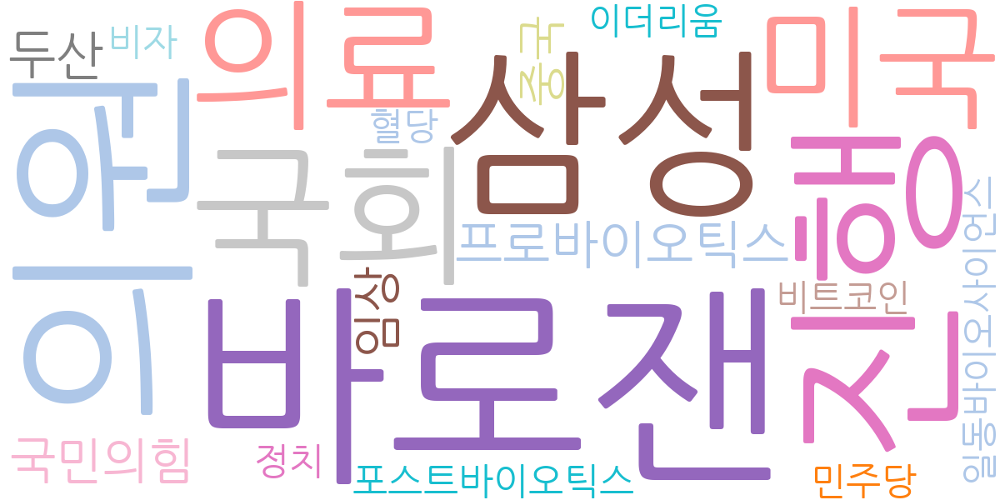
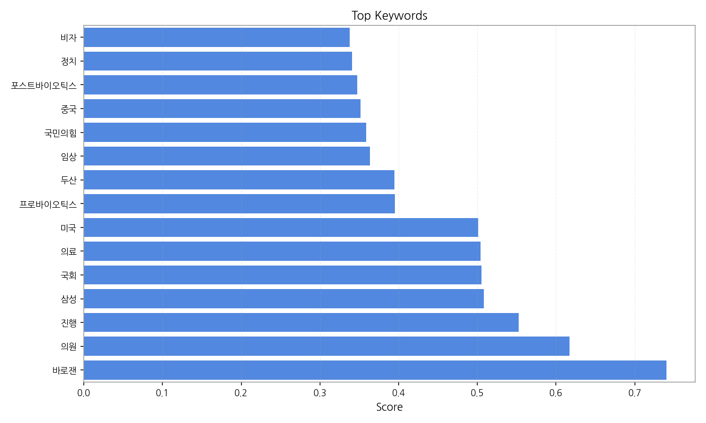
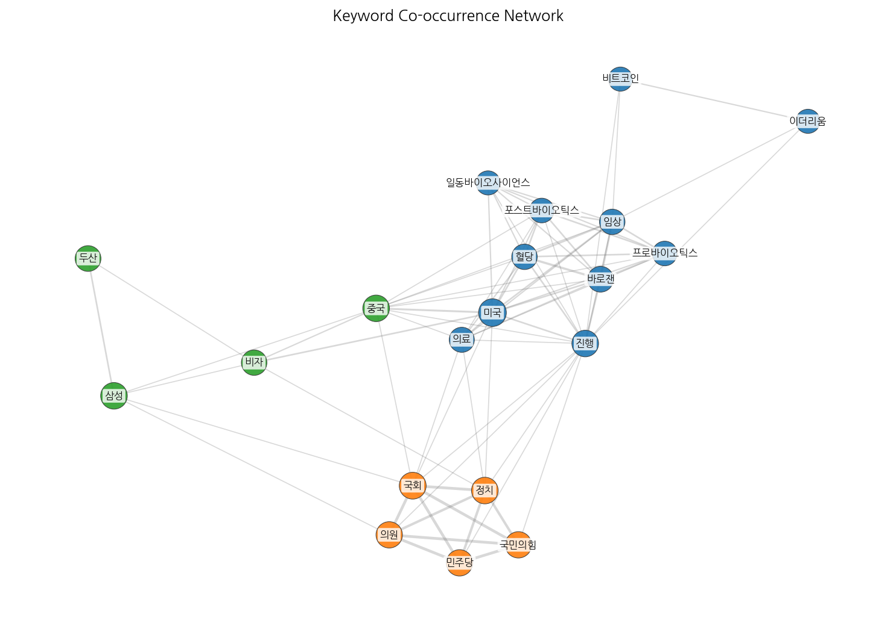
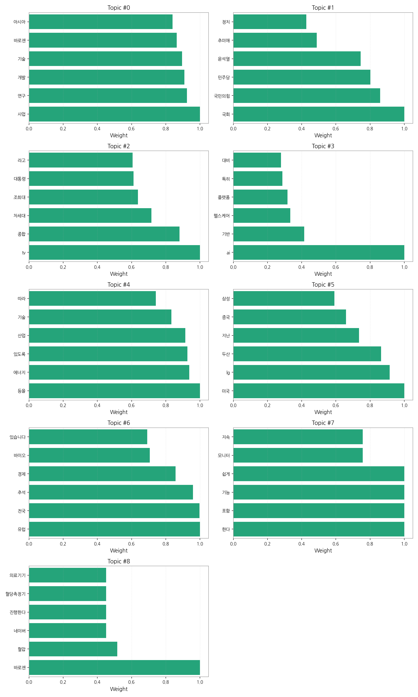
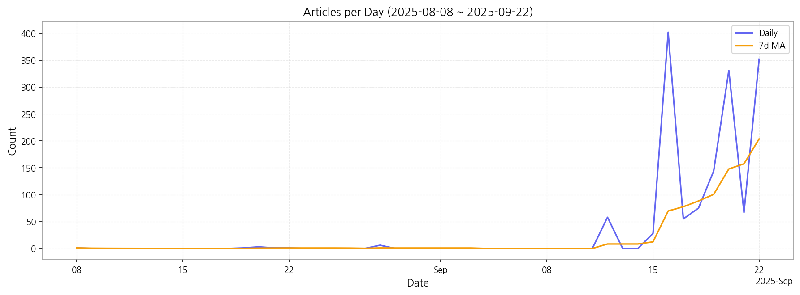

1. 핵심 맥락 설명
2. 최근 변화/스파이크
2025년 9월 16일과 20일, 22일에 기사 수가 급증한 것으로 보아 특정 정치적 사건, 기술 발표, 혹은 경제 이슈가 발생하여 언론의 집중적인 조명을 받은 것으로 추정됩니다. 이러한 급증은 특정 사건에 대한 대중의 높은 관심도를 반영하며, 관련 분야에 대한 심층적인 분석이 필요합니다.
3. 실무 인사이트

| Rank | Keyword | Score |
|---|---|---|
| 1 | 바로잰 | 0.740 |
| 2 | 의원 | 0.617 |
| 3 | 진행 | 0.552 |
| 4 | 삼성 | 0.508 |
| 5 | 국회 | 0.505 |
| 6 | 의료 | 0.504 |
| 7 | 미국 | 0.501 |
| 8 | 프로바이오틱스 | 0.395 |
| 9 | 두산 | 0.395 |
| 10 | 임상 | 0.363 |
| 11 | 국민의힘 | 0.358 |
| 12 | 중국 | 0.352 |
| 13 | 포스트바이오틱스 | 0.347 |
| 14 | 정치 | 0.341 |
| 15 | 비자 | 0.338 |




1. 핵심 맥락 설명
2. 최근 변화/스파이크
2025년 9월 16일과 20일, 22일에 기사 수가 급증한 것으로 보아 특정 정치적 사건, 기술 발표, 혹은 경제 이슈가 발생하여 언론의 집중적인 조명을 받은 것으로 추정됩니다. 이러한 급증은 특정 사건에 대한 대중의 높은 관심도를 반영하며, 관련 분야에 대한 심층적인 분석이 필요합니다.
3. 실무 인사이트
| Idea | Target | Value Prop | Score |
|---|---|---|---|
| 헬스케어 데이터 기반 맞춤형 디스플레이 광고 플랫폼 | KR 헬스케어 제품/서비스 기업, 제약회사, 건강기능식품 회사 (마케팅 부서) | 헬스케어 데이터 기반의 맞춤형 디스플레이 광고 플랫폼으로, 혈압/혈당 측정 데이터 등을 활용하여 개인의 건강 상태에 맞는 광고를 제공합니다. 기존 광고 대비 2배 이상의 광고 클릭률 및 40% 이상의 구매 전환율 향상을 기대할 수 있습니다. (차별화 포인트: GDPR 준수) | 4.50 |
| 디스플레이 품질 검사 AI 솔루션 | KR/JP 디스플레이 제조사, 전자 부품 제조사 (대기업/중견기업, 생산/품질관리 부서) | AI 기반의 자동화된 디스플레이 품질 검사 솔루션으로, 기존 검사 방식 대비 99% 이상의 정확도와 50% 이상의 검사 시간 단축을 제공합니다. 데이터 기반 분석을 통해 불량 원인 분석 및 공정 개선 인사이트를 제공하여 근본적인 품질 향상을 돕습니다. (차별화 포인트: AI 모델 지속적 업데이트) | 4.20 |
| AI 기반 사이니지 콘텐츠 자동 생성 서비스 | KR 디지털 사이니지 운영사, 소상공인, 프랜차이즈 (마케팅/홍보 부서) | AI 기반의 디지털 사이니지 콘텐츠 자동 생성 서비스로, 템플릿 기반의 간편한 편집 기능과 AI 이미지/텍스트 생성 기능을 제공합니다. 기존 콘텐츠 제작 방식 대비 70% 이상의 비용 절감 및 제작 시간 단축 효과를 제공합니다. (차별화 포인트: 사용자 데이터 기반 콘텐츠 추천) | 4.00 |
| 모빌리티-사이니지 연동 광고 플랫폼 | KR 광고 대행사, 디지털 사이니지 운영사, 택시/버스 등 모빌리티 사업자 | 모빌리티 데이터와 연동된 디지털 사이니지 광고 플랫폼으로, 실시간 위치 기반 타겟팅 및 광고 효과 분석을 제공합니다. 기존 옥외 광고 대비 2배 이상의 광고 도달률과 30% 이상의 전환율 향상을 기대할 수 있습니다. (차별화 포인트: 개인정보보호 규정 준수) | 3.80 |
| EU 전자 부품 조달 파트너십 서비스 | EU 진출 희망 국내 전자 제조사 (중소/중견기업, 구매/해외영업 부서) | EU 지역 내 검증된 전자 부품 공급망을 활용하여, 국내 제조사들의 EU 시장 진출을 위한 부품 조달을 대행합니다. 복잡한 EU 규제 준수 및 현지 언어 지원을 통해 조달 비용 절감 및 리스크 감소 효과를 제공합니다. (차별화 포인트: ESG 인증 부품 우선 조달) | 3.50 |